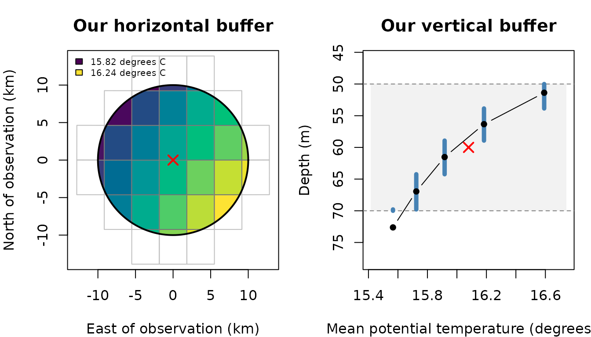
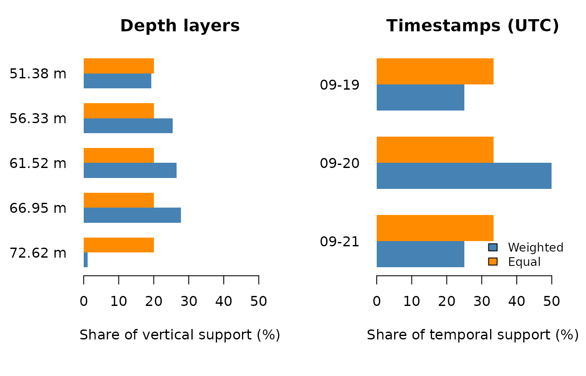

Extracting environmental data around observation points
Source:vignettes/articles/extracting-and-weighting-buffer-data.Rmd
extracting-and-weighting-buffer-data.RmdEnvironmental observations are often associated with a single location, depth and time. However, the conditions experienced by a marine animal may extend beyond that exact point. An animal may move between neighbouring cells, occupy several depths or encounter changing temperatures over time.
Similarly, a fishing operation may extend across space and time rather than occur at one exact point. A longline may span several kilometres and remain deployed for hours, while a trawl moves through an area during a tow. In these situations, we may want to describe environmental conditions around the recorded location, across relevant depths and over the duration of the operation.
Rather than selecting one environmental value, we may therefore want to describe the conditions within a surrounding volume and time window.
How can we summarise these conditions, and why might two averages of the same data give different results?
In this tutorial, we will use extract_to_buffer() to
explore this question with a small example of Mediterranean Sea
potential temperature. We will build a buffer around one observation,
compare two ways of calculating its mean and examine how individual
cells, layers and timestamps contribute.
Our research question
Imagine we have recorded a marine animal at:
- Longitude 0 degrees and latitude 38 degrees.
- A depth of 60 metres.
- Midnight UTC on 20 September 2026.
We would like to describe the temperature conditions within 10 kilometres of this location, between 50 and 70 metres deep, and from one day before to one day after the observation.
Our question concerns a surrounding volume over time, rather than the single closest temperature measurement. This distinction determines both which values contribute and how much weight each value receives.
To keep the example reproducible, this article includes a small netCDF subset and the geometry used for its figures. No external download or API credentials are required. These are real modelled temperatures, not artificially generated observations. Their source is described at the end.
Getting started: preparing our data
The article files are in vignettes/articles/ in the
source repository. When running these examples manually, use that
directory as your working directory. The website runs the examples using
the same relative paths.
library(ocean3d)
# Locate the small netCDF provided with this article.
example_dir <- "buffer-data"
nc_file <- file.path(example_dir, "temperature-subset.nc")
# Load the article's display data and plotting helpers.
example <- readRDS(file.path(example_dir, "temperature-geometry.rds"))
source(file.path(example_dir, "figures.R"))The plotting helpers belong to this article; they are not exported
ocean3d functions. Extraction itself uses the netCDF
directly.
We begin by placing our observation in a table. Longitude and latitude are in decimal degrees, and depth is positive downwards, in metres. We specify UTC explicitly so that the observation has an unambiguous time.
observation <- data.frame(
id = "observation_1",
lon = 0,
lat = 38,
depth = 60,
date = as.POSIXct("2026-09-20 00:00:00", tz = "UTC")
)
observation
#> id lon lat depth date
#> 1 observation_1 0 38 60 2026-09-20Step 1: Defining the space and time around our observation
A horizontal radius of 10 kilometres defines a circle around our location. A depth radius of 10 metres extends 10 metres above and below the requested 60 metres. Our temporal window extends one day in each direction.
The result is a cylinder from 50 to 70 metres deep, considered over a 48-hour period. We do not extend the cylinder to the sea surface.
Let’s first examine the horizontal footprint and the temperature layers available in this part of the water column.
plot_buffer_footprint(example)
Figure 1. Our requested buffer in horizontal and vertical views. Left: the circle marks the 10 km radius and the red cross marks the observation. Grid cells are coloured by their weighted mean potential temperature within the requested depth and time window; only their intersecting parts are filled. Right: black points show the centres of the contributing layers, and blue segments show the thickness used from each layer. The shaded band is the requested 50-70 m interval. The red cross marks the requested depth; its horizontal position is illustrative.
1.1. Understanding what a layer represents
The centre of a layer is a coordinate, not its full vertical extent. To determine how much of a layer lies inside our buffer, we also need its upper and lower boundaries. The same applies to geographical cells and temporal intervals.
Some netCDF files provide these boundaries explicitly, using
bounds variables. Our example does not. We therefore use
infer_bounds = TRUE to estimate boundaries halfway between
neighbouring coordinate centres. At the outer edges, half of the
adjacent gap is extrapolated.
These are assumptions about represented support. In particular, inferring temporal boundaries does not establish the physical averaging period of the source product. The source metadata describes these data as daily means; the boundaries used here are still inferred by the function.
Step 2: Extracting a weighted mean
Now that we have defined our buffer, let’s calculate its mean temperature.
weighted <- extract_to_buffer(
data = observation,
nc = nc_file,
var = "thetao",
horizontal_radius_km = 10,
depth_radius_m = 10,
time_before = 1,
time_after = 1,
time_unit = "days",
statistic = "mean",
weighting = "weighted",
infer_bounds = TRUE,
output_col = "temperature"
)
weighted[, c("id", "temperature")]
#> id temperature
#> 1 observation_1 16.05743The original observation is retained and a new column contains its summary. Here, the weighted mean is approximately 16.05743 degrees C.
The function also returns a diagnostic list column. Let’s inspect the parts that describe coverage and the number of values used.
information <- weighted$temperature_match_info[[1]]
information[c(
"coverage_fraction", "valid_fraction", "n_intersecting",
"n_valid", "status"
)]
#> $coverage_fraction
#> [1] 1
#>
#> $valid_fraction
#> [1] 1
#>
#> $n_intersecting
#> [1] 450
#>
#> $n_valid
#> [1] 450
#>
#> $status
#> [1] "complete"There are 450 valid values: 30 geographical cells, five depth layers and three timestamps. Both coverage fractions are one, meaning that the entire requested support is covered and contains valid data.
This does not mean that the 450 values must have equal weights.
Step 3: Comparing weighted and equal means
Let’s repeat the same extraction, changing only the weighting rule.
equal <- extract_to_buffer(
data = observation,
nc = nc_file,
var = "thetao",
horizontal_radius_km = 10,
depth_radius_m = 10,
time_before = 1,
time_after = 1,
time_unit = "days",
statistic = "mean",
weighting = "equal",
infer_bounds = TRUE,
output_col = "temperature"
)
data.frame(
weighted = weighted$temperature,
equal = equal$temperature
)
#> weighted equal
#> 1 16.05743 15.98204The equal-weight mean is approximately 15.98204 degrees C. Both means use exactly the same valid values, but answer slightly different questions:
- Equal: what is the average of the selected values, with every value counting once?
- Weighted: what is the average over the represented volume and time, with each value weighted by the support inside our buffer?
For the weighted calculation, a sample’s contribution is proportional to its intersecting area, thickness and duration. These contributions are normalised over the valid samples when calculating the mean.
3.1. Why complete coverage does not imply equal weights
Consider a cell at the edge of the circle. Only a small part of its area may lie inside our requested buffer. With equal weighting, its value counts as much as that of a cell lying entirely inside the circle. With weighted extraction, its smaller intersecting area gives it less weight.
The same principle applies to the vertical and temporal boundaries.
plot_buffer_weights(example)
Figure 2. Comparing the contribution of depth layers and timestamps. Blue bars show their shares of the requested vertical or temporal support; orange bars show their shares when every selected value has equal weight. These are marginal shares for this fully covered example. A sample’s final weight also depends on its horizontal intersection and the other axis.
The deepest selected layer is a useful example. Its centre is at 72.62 m, below our requested maximum depth. However, its inferred upper boundary is at approximately 69.79 m, so about 0.21 m of the layer lies inside the requested interval.
Equal weighting assigns this layer the same vertical share as the other four layers: 20%. Weighted extraction assigns it about 1.07%, reflecting the thickness actually included. In these data, this layer is colder; reducing its weight contributes to the higher weighted mean.
We have not extended the extraction below 70 m. The temperature at the layer centre represents the intersecting part of its inferred layer. No vertical interpolation is performed.
Similarly, the three selected timestamps represent different fractions of our 48-hour window: 12 hours, 24 hours and 12 hours. With equal weights, each timestamp receives one third of the temporal contribution instead.
Step 4: Exploring our buffer in three dimensions
We can now bring the horizontal, vertical and temporal views together.
buffer_explorer(example, file.path(example_dir, "explorer.js"))Figure 3. Interactive view of the potential temperatures used in
the extraction. Rotate the volume and select a date or depth layer to
inspect the contributing values. Switch to the horizontal footprint to
see how the circular buffer cuts through the grid. Colour can represent
either temperature or contribution weight. Each 3D prism represents a
cell-layer intersection at the selected timestamp, rather than a
SpatVoxel object. Depth is visually exaggerated and is not
drawn at the horizontal scale. Displayed polygon edges are simplified by
up to 5 m; calculation weights use the unsimplified geometry. Controls
change the display, not the requested buffer; the reported mean always
refers to all 450 values.
When looking at the contribution weights, remember that the equal rule assigns each of the 450 values a weight of 1/450. With weighted extraction, the weight changes with the intersecting area, thickness and duration. Changing the date or layer helps us see these differences without changing the extraction itself.
The figures use stored display data to keep the article lightweight.
The preparation script reconstructs their support independently from the
netCDF coordinates and checks its aggregate against
extract_to_buffer(). The rounded means displayed above are
also calculated directly from the supplied netCDF when this article is
built.
Step 5: Describing variability and extreme values
The mean is only one way to describe conditions around an observation. We can also request the standard deviation, standard error, minimum or maximum. Each call calculates one statistic per observation and variable.
statistics <- c("mean", "sd", "se", "min", "max")
summaries <- lapply(statistics, function(statistic) {
result <- extract_to_buffer(
data = observation,
nc = nc_file,
var = "thetao",
horizontal_radius_km = 10,
depth_radius_m = 10,
time_before = 1,
time_after = 1,
statistic = statistic,
weighting = "weighted",
infer_bounds = TRUE,
output_col = "temperature"
)
data.frame(statistic = statistic, temperature = result$temperature)
})
do.call(rbind, summaries)
#> statistic temperature
#> 1 mean 16.05742847
#> 2 sd 0.34459073
#> 3 se 0.02306576
#> 4 min 15.44085979
#> 5 max 17.17307854SD describes variation among selected values, using the sample variance correction for the selected weights. SE divides this SD by the square root of the effective sample size. With equal weights, these reduce to ordinary sample SD and SD divided by the square root of the sample count. Both need at least two valid samples with usable weights.
Neighbouring cells and dates can be correlated. SE assumes independence; it does not correct spatial or temporal autocorrelation. It should not automatically be interpreted as the uncertainty of the environmental mean. The effective sample size describes weight concentration, not the number of independent ocean measurements.
Minimum and maximum use the valid values with positive intersecting support, regardless of the magnitude of their weights. They are still subject to the same valid-coverage requirement.
Step 6: Understanding partial coverage and rejected requests
So far, our buffer has been fully covered. For another observation, the requested depth or time window might extend beyond the available data, or some selected values might be missing.
By default, min_valid_fraction = 0.8 requires at least
80% of the entire requested support to contain valid
values. Missing values and uncovered portions reduce this fraction. It
is not the proportion of selected rows that happen to be
non-missing.
The supplied netCDF is deliberately small. Let’s request a wider temporal window than it contains.
too_wide <- extract_to_buffer(
data = observation,
nc = nc_file,
var = "thetao",
depth_radius_m = 10,
time_before = 10,
time_after = 10,
infer_bounds = TRUE,
output_col = "temperature"
)
#> Buffer report: 1 observation(s) need attention.
#> netCDF variable: thetao · output column: temperature
#> Row 1: Valid coverage is below minimum; result: NA. Coverage: 25%; valid: 25%; required: 80%.
#> Check coordinates, source coverage and missing values. Change the window or threshold only if appropriate for your analysis.
too_wide$temperature
#> [1] NA
too_wide$temperature_match_info[[1]][c("status", "valid_fraction")]
#> $status
#> [1] "insufficient_coverage"
#>
#> $valid_fraction
#> [1] 0.25The result is NA because valid coverage is below the
requested threshold. Reducing that threshold can accept a partial
result, but it does not fill missing data or make the source cover a
larger period. Any such change should reflect the needs of the
analysis.
A different situation occurs when the observation’s date is
explicitly missing. The row is retained, with an NA summary
and a diagnostic.
missing_date <- observation
missing_date$date <- as.POSIXct(NA, tz = "UTC")
missing_result <- extract_to_buffer(
data = missing_date,
nc = nc_file,
var = "thetao",
depth_radius_m = 10,
infer_bounds = TRUE,
output_col = "temperature"
)
#> Buffer report: 1 observation(s) need attention.
#> netCDF variable: thetao · output column: temperature
#> Row 1: The observation date is NA; result: NA.
#> Check coordinates, source coverage and missing values. Change the window or threshold only if appropriate for your analysis.
missing_result[, c("id", "temperature")]
#> id temperature
#> 1 observation_1 NAInvalid settings instead produce an error. For example, the following request does not permit the bounds inference required by our file:
extract_to_buffer(
data = observation,
nc = nc_file,
var = "thetao",
depth_radius_m = 10,
infer_bounds = FALSE
)
#> Error:
#> ! Coordinate `depth` has no explicit bounds. Use a dataset with bounds or explicitly set `infer_bounds = TRUE` to estimate midpoint intervals.This error is intentional. Using infer_bounds = TRUE is
an explicit choice about support, not a repair for invalid bounds
declared by a file. A single coordinate without bounds does not provide
enough information to infer its width or duration.
Selecting values similar to a measurement
A recorded temperature may help us ask a different question from a buffer mean: which available environmental value is most similar to this measurement within a specified neighbourhood? For example, a tag may record temperature while its location or depth is uncertain.
This workflow selects an existing environmental value. It does not locate the animal, demonstrate where a measurement was taken, or interpolate a new temperature. Several locations can have the same winning value.
Getting started: preparing our data
We use the same real Copernicus Marine subset as the point tutorial.
Run from vignettes/articles/. The location and measurement
are fictional examples.
library(ocean3d)
target_nc <- file.path("point-data", "temperature-points.nc")
target_observation <- data.frame(
lon = 0, lat = 38, depth = 60, date = as.Date("2026-09-20"),
recorded_temperature = 16
)Step 1: Selecting the most similar available value
selected <- extract_to_buffer(
target_observation, target_nc, var = "thetao", output_col = "temperature",
horizontal_radius_km = 10, depth_radius_m = 10,
statistic = "most_similar", target_col = "recorded_temperature",
infer_bounds = TRUE, quiet = TRUE
)
selected[c("recorded_temperature", "temperature")]
#> recorded_temperature temperature
#> 1 16 15.99929The target column must be numeric and use the netCDF variable’s
units. Its physical definition must also agree. This subset contains
potential temperature (thetao); an in-situ sensor temperature is not
automatically equivalent. Our fictional target is assumed compatible for
this example. For temperature, convert explicitly if your measurement
uses a different scale. For several variables, use a named mapping such
as
target_col = c(thetao = "recorded_temperature", so = "recorded_salinity").
Cells and layers contribute where their support intersects the buffer. Their coordinate centres may lie outside a window even though part of their support lies inside it; the same intersection rules as ordinary buffer summaries apply.
The function considers valid values inside the requested buffer and
minimises their absolute difference from the row’s target. Area,
thickness and duration determine coverage; larger support does not make
a less similar value win. weighting still governs ordinary
buffer summaries.
Step 2: Inspecting the actual winning locations
info <- selected$temperature_match_info[[1]]
info[c("coverage_fraction", "valid_fraction", "status")]
#> $coverage_fraction
#> [1] 1
#>
#> $valid_fraction
#> [1] 1
#>
#> $status
#> [1] "complete"
info$target_match[c("target", "value", "absolute_difference")]
#> $target
#> [1] 16
#>
#> $value
#> [1] 15.99929
#>
#> $absolute_difference
#> [1] 0.0007123947
info$target_match$matches
#> value source_file longitude latitude depth_m
#> 42 15.99929 point-data/temperature-points.nc -0.1249998 37.97917 56.33429
#> timestamp_utc lon_index lat_index depth_index time_index
#> 42 2026-09-20 2 4 17 2For most_similar, the winning coordinates are also
ordinary output columns:
selected[c(
"lon", "lat", "temperature", "temperature_match_lon", "temperature_match_lat",
"temperature_match_depth", "temperature_match_time"
)]
#> lon lat temperature temperature_match_lon temperature_match_lat
#> 1 0 38 15.99929 -0.1249998 37.97917
#> temperature_match_depth temperature_match_time
#> 1 56.33429 2026-09-20The original coordinates stay unchanged. The new longitude and
latitude locate the model cell centre; depth and UTC time describe the
winning model record. They are returned even with
return_match_info = FALSE. They describe an environmental
candidate, not proof that an observation occurred there. A cell centre
can lie outside the buffer when only part of its support intersects it.
Review that support before using a centre to revise a position.
If several winning records share a single horizontal location, that
longitude and latitude are still returned. Depth or time is
NA when it is ambiguous. If several horizontal locations
remain, both longitude and latitude are NA. All winners
remain in target_match$matches, and the function warns with
affected rows and instructions. quiet = TRUE does not hide
that warning. Depth or time is also NA when the variable
has no corresponding axis; that absence alone is not an ambiguity
warning. Coverage status such as complete describes
available support, while target_match$location_status
describes whether a unique winning location could be assigned.
The matches table contains all locations with the selected winning value, including file, cell centre, model depth and UTC timestamp. These are environmental records, not estimated observation coordinates. Identical winning values at multiple locations are retained rather than choosing the first file or claiming a unique location.
Step 3: Understanding ties and limits
If the target is 20 and the available values are 17, 19 and 24, the
function selects 19: their absolute differences are 3, 1 and 4. No tie
rule is needed. If the best values are 19 and 21, both differ by one.
Only then does target_ties decide between different equally
good values:
target_ties |
Result for target 20 and winners 19, 21 |
|---|---|
"NA" (default) |
NA, with the tied records in
diagnostics |
"lower" |
19 |
"higher" |
21 |
These options never select a less similar value. They do not take the minimum or maximum of the entire buffer, and they never average a tie.
lower and higher refer to the
environmental value, not shallower/deeper layers or
smaller/larger coordinates. To demonstrate this with the real data, use
a very narrow depth window across the boundary between two model
layers:
handle <- ncdf4::nc_open(target_nc)
depth_centres <- handle$dim$depth$vals
ncdf4::nc_close(handle)
first_layer <- which.min(abs(depth_centres - 60))
pair <- target_observation[rep(1, 2), ]
pair$depth <- depth_centres[c(first_layer, first_layer + 1)]
pair <- extract_to_point(
pair, target_nc, var = "thetao", method = "nearest", output_col = "temperature",
time_report = FALSE, spatial_report = FALSE, depth_report = FALSE
)
pair[c("depth", "temperature")]
#> depth temperature
#> 1 61.52196 15.94670
#> 1.1 66.94949 15.74077
tie_observation <- target_observation
tie_observation$depth <- mean(pair$depth)
tie_observation$recorded_temperature <- mean(pair$temperature)The two layer centres have different temperatures. The target is
exactly their midpoint, so both are equally similar. The following call
deliberately warns and returns NA for the value and
location rather than choosing a layer:
tied <- extract_to_buffer(
tie_observation, target_nc, var = "thetao", output_col = "temperature",
depth_radius_m = 0.1, statistic = "most_similar",
target_col = "recorded_temperature", infer_bounds = TRUE, quiet = TRUE
)
#> Warning: most_similar could not assign a unique location for output
#> `temperature` in 1 row(s). Rows: 1. Ambiguous location fields are NA; original
#> coordinates are retained. Use return_match_info = TRUE and inspect
#> `temperature_match_info[[1]]$target_match$matches` (or $ties for tied values).
#> For equally similar different values, choose target_ties = 'lower' or 'higher'
#> only if justified.
tied[c("temperature", "temperature_match_lon", "temperature_match_depth")]
#> temperature temperature_match_lon temperature_match_depth
#> 1 NA NA NA
tied$temperature_match_info[[1]]$target_match$ties
#> value source_file longitude latitude depth_m
#> 1 15.94670 point-data/temperature-points.nc 1.803995e-07 37.97917 61.52196
#> 2 15.74077 point-data/temperature-points.nc 1.803995e-07 37.97917 66.94949
#> timestamp_utc lon_index lat_index depth_index time_index
#> 1 2026-09-20 5 4 18 2
#> 2 2026-09-20 5 4 19 2If the study justifies choosing the cooler or warmer value, request that explicitly. Both calls use the same two candidates and target:
cooler <- extract_to_buffer(
tie_observation, target_nc, var = "thetao", output_col = "temperature",
depth_radius_m = 0.1, statistic = "most_similar",
target_col = "recorded_temperature", target_ties = "lower",
infer_bounds = TRUE, quiet = TRUE
)
warmer <- extract_to_buffer(
tie_observation, target_nc, var = "thetao", output_col = "temperature",
depth_radius_m = 0.1, statistic = "most_similar",
target_col = "recorded_temperature", target_ties = "higher",
infer_bounds = TRUE, quiet = TRUE
)
data.frame(
policy = c("NA", "lower", "higher"),
selected = c(tied$temperature, cooler$temperature, warmer$temperature),
depth_m = c(tied$temperature_match_depth, cooler$temperature_match_depth,
warmer$temperature_match_depth)
)
#> policy selected depth_m
#> 1 NA NA NA
#> 2 lower 15.74077 66.94949
#> 3 higher 15.94670 61.52196There is a different ambiguity when the same winning
value occurs in several cells. For a target of 16 degrees C,
two cells both containing 16 remain equally valid under all three
target_ties settings. The value stays 16, ambiguous
location fields stay NA, and a warning recommends
inspecting target_match$matches. Narrow the search or apply
an independently justified location rule; selecting the first file or
averaging the coordinates would invent a location. Lower/higher cannot
resolve this kind of tie.
If a difference smaller than a scientific tolerance is required, set
max_target_difference explicitly, in the same units as the
variable.
exact_only <- extract_to_buffer(
target_observation, target_nc, var = "thetao", output_col = "temperature",
horizontal_radius_km = 10, depth_radius_m = 10,
statistic = "most_similar", target_col = "recorded_temperature",
max_target_difference = 0, infer_bounds = TRUE, quiet = TRUE
)
exact_only$temperature
#> [1] NA
exact_only$temperature_match_info[[1]]$status
#> [1] "outside_target_limit"A limit of zero requires an exact numeric match. NA here
means no acceptable candidate was found, not that the measurement is
invalid.
Step 4: Seeing how the selected value changes with the target
Hold the buffer fixed and vary only the target. Hover over the interactive figure to compare each requested and selected temperature. The dashed line shows an exact match. The available model records limit which values can be selected, however finely we vary the target.
The horizontal axis is the target we supply; the vertical axis is the value actually extracted. Each blue point is a separate extraction from the same buffer. We are not changing its location, depth, date or radius, and no new environmental temperatures are created between the available model values. The connecting blue line only helps follow these eleven results.
targets <- target_observation[rep(1, 11), ]
targets$recorded_temperature <- seq(15.5, 16.5, length.out = 11)
comparison <- extract_to_buffer(
targets, target_nc, var = "thetao", output_col = "temperature",
horizontal_radius_km = 10, depth_radius_m = 10,
statistic = "most_similar", target_col = "recorded_temperature",
infer_bounds = TRUE, quiet = TRUE
)
figure <- plotly::plot_ly(
comparison, x = ~recorded_temperature, y = ~temperature,
type = "scatter", mode = "lines+markers", name = "Selected model value",
hovertemplate = "Target: %{x:.5f} C<br>Selected: %{y:.5f} C<extra></extra>"
)
figure <- plotly::add_trace(figure,
x = ~recorded_temperature, y = ~recorded_temperature,
type = "scatter", mode = "lines",
name = "Exact target", line = list(dash = "dash"), inherit = FALSE)
figure <- plotly::layout(figure,
xaxis = list(title = "Target temperature (C)"),
yaxis = list(title = "Selected temperature (C)"),
legend = list(orientation = "h", y = -0.2), margin = list(b = 85))
figure <- plotly::config(figure, displaylogo = FALSE, responsive = TRUE)
htmlwidgets::onRender(figure, paste0(
"function(el,x){el.style.width='100%';",
"function resize(){window.Plotly.Plots.resize(el);}",
"window.addEventListener('resize',resize);resize();}"
))Figure 4. Blue points show existing model values selected for eleven different targets in the same fixed buffer. The dashed line represents an exact target match. Their near-overlap reflects small selection differences, not environmental interpolation.
Here the buffer contains many distinct temperatures close to the targets, so the blue points almost overlap the dashed line. Above the dashed line, the selected value is warmer than requested; below it, it is cooler. Near-overlap does not establish exact equality. These examples reveal the small differences that are difficult to see at the figure’s scale:
examples <- comparison[c(1, 6, 11), ]
knitr::kable(data.frame(
Target = examples$recorded_temperature,
Selected = examples$temperature,
Difference = examples$temperature - examples$recorded_temperature
), digits = 5, caption = "Temperatures and selected-minus-target differences, in degrees C.")| Target | Selected | Difference |
|---|---|---|
| 15.5 | 15.50246 | 0.00246 |
| 16.0 | 15.99929 | -0.00071 |
| 16.5 | 16.49405 | -0.00595 |
Five decimal places make this numerical comparison visible; they do
not imply that the environmental product has that measurement accuracy.
With fewer distinct candidates, several nearby targets could select the
same value, producing flat sections instead. An equally good tie between
different values would give NA under the default tie
policy. Connecting points with a line does not imply that all
intermediate targets were tested.
Step 5: Understanding missing values and coverage
most_similar accepts any positive valid support by
default. A value from only a small part of a buffer can therefore win;
inspect valid_fraction. Set
min_valid_fraction = 0.8 explicitly if at least 80% must be
available. Ordinary mean, SD, SE, minimum and maximum retain their 80%
default. An empty or entirely missing buffer always returns
NA, even at threshold zero.
missing_target <- target_observation
missing_target$recorded_temperature <- NA_real_
missing_result <- extract_to_buffer(
missing_target, target_nc, var = "thetao", horizontal_radius_km = 10,
statistic = "most_similar", target_col = "recorded_temperature",
infer_bounds = TRUE, quiet = TRUE
)
missing_result$thetao
#> [1] NA
missing_result$thetao_match_info[[1]]$status
#> [1] "missing_target"A missing target preserves the observation and returns
NA. Text or infinite targets are rejected with an
explanation of the affected input. Changing coverage or similarity
limits changes the scientific question; it is not an automatic
correction of incomplete observations.
Summary
We have described the environmental conditions around an observation using horizontal, vertical and temporal buffers. Along the way, we have:
- Defined a requested volume and time window.
- Extracted weighted and equal means from the same real temperature values.
- Examined how cell intersections, layer thicknesses and temporal support produce different contribution weights.
- Explored these values in three dimensions and calculated other statistics.
- Distinguished complete coverage, missing results and invalid requests.
A buffer does not need to extend along all three axes. For example,
horizontal_radius_km = 10 alone averages over a circle
while retaining point selection in depth and time. Alternatively,
depth_layer_radius = 1 requests a three-layer neighbourhood
rather than a fixed number of metres. Index windows that extend beyond
the grid are rejected because their full physical support is
unknown.
Next steps
- See
extract_to_buffer()for the full set of window, coverage and output options. - Use
extract_to_point()when the question concerns a selected cell and layer rather than a surrounding buffer. - Return to Getting started with ocean3d to
explore species’ three-dimensional distributions with
SpatEnvelopeandSpatVoxelobjects.
For temporal windows, days are 24 elapsed hours; months and years are whole calendar shifts in UTC. Multiple complementary files are combined before assessing coverage. Overlapping selected support is rejected rather than silently counted twice. Neither reduced calendar precision nor inferred bounds performs a temporal aggregation or reconstructs the physical averaging period of a source product.
Data sources and reproducibility
The example is a subset of Mediterranean Sea Physics
Reanalysis, product MEDSEA_MULTIYEAR_PHY_006_004,
dataset cmems_mod_med_phy-temp_my_4.2km_P1D-m_202511. It
contains the original thetao values and coordinate centres
from a download made on 19 October 2026. The original metadata
identifies CMCC as the producer and describes the data as daily mean
potential temperature.
E.U. Copernicus Marine Service Information; https://doi.org/10.48670/mds-00375. The subset and derived figures retain this attribution. Source data remain subject to the Copernicus Marine Service licence. The figures do not imply endorsement by Copernicus Marine or CMCC.
The article’s buffer-data/README.md
records the subset and its preparation. The repository script data-raw/buffer-article.R
regenerates the subset and display data from the downloaded original. It
keeps neighbouring coordinates so that the inferred bounds and the
extracted mean match the larger file. It does not add explicit bounds or
alter the original temperature values.
All arguments and defaults
Expand or collapse the complete extract_to_buffer() signature
This signature is generated from the current function. Arguments without a default require input. Where a vector lists alternatives, its first entry is the default; supply one alternative in a call.
extract_to_buffer(
# Data and sources
data, nc, var = NULL,
# Horizontal buffer
horizontal_radius_km = 0, lon_cell_radius = NULL, lat_cell_radius = NULL,
# Depth buffer
depth_radius_m = 0, depth_layer_radius = NULL,
# Time buffer
time_before = 0, time_after = 0,
time_unit = c("days", "hours", "minutes", "seconds", "months", "years"),
# Statistics inside each buffer
statistic = "mean", weighting = c("weighted", "equal"),
# Valid coverage and bounds
min_valid_fraction = NULL, infer_bounds = FALSE,
# Similar-value selection
target_col = NULL, max_target_difference = NULL,
target_ties = c("NA", "lower", "higher"),
# Depth selection
method = NULL,
# Observation and output columns
lon_col = "lon", lat_col = "lat", depth_col = "depth", date_col = "date",
output_col = NULL, id_col = NULL,
# Source columns and dimensions
file_col = "file", lon_dim = NULL, lat_dim = NULL, depth_dim = NULL,
time_dim = NULL,
# Temporal selection
time_match = c("nearest", "exact"),
time_resolution = c("auto", "datetime", "daily", "monthly", "yearly"),
max_time_diff = NULL,
# Spatial selection
spatial_match = c("within", "nearest"), max_distance_km = NULL,
# Diagnostics and messages
return_match_info = TRUE, quiet = FALSE
)Some decisions need more context than a default value alone:
| Decision | Choices, meaning and effective default |
|---|---|
| Data and variables |
data supplies observations;
nc supplies sources. var = NULL detects
variables, or supply names explicitly. output_col = NULL
chooses output names automatically. |
| Horizontal window |
horizontal_radius_km = 0 keeps point
selection; a positive radius requests a circle. Alternatively,
nonnegative integer lon_cell_radius /
lat_cell_radius select neighbouring cells. Physical and
index radii cannot be combined on that axis. |
| Depth and time windows |
depth_radius_m = 0 and
time_before = time_after = 0 keep point selection on those
axes. Positive values extend the buffer; depth_layer_radius
selects neighbouring layers instead of metres. At least one window must
be positive. |
time_unit |
"seconds", "minutes",
"hours", "days" are elapsed units (days = 24
hours); "months" and "years" are whole UTC
calendar shifts, clamped at month ends. Default:
"days". |
statistic |
"mean" averages values; "sd"
describes spread; "se" reports the standard error;
"min" / "max" return the lowest / highest
value. "most_similar" selects the available value nearest
the target. Default: "mean"; choose one. |
weighting |
"weighted" (default) weights intersecting
area, layer thickness and temporal support; "equal" gives
valid contributing records equal weight. This does not change which
value is most similar. |
min_valid_fraction |
NULL (default) resolves to 0.8 for ordinary statistics or 0 for most_similar (any positive valid support). Choose a fraction from 0 to 1; empty support still gives NA. |
infer_bounds |
FALSE (default) requires available support bounds; TRUE permits documented inference from coordinate centres. |
method |
"2d" has no depth selection;
"nearest" selects the closest valid layer to the requested
depth; "surface" selects the physically shallowest layer;
"bottom" selects the deepest valid layer. NULL (default)
chooses per variable on unbuffered axes; "all" is
unavailable. |
| Temporal selection |
time_match = "nearest" (default) chooses
the nearest eligible label; "exact" requires the requested
label. "auto" follows observation precision;
"datetime" preserves instants; "daily",
"monthly", "yearly" compare UTC calendar
labels. Default: "auto"; custom is unavailable.
max_time_diff = NULL has no extra distance limit; supply
nonnegative days to impose one. |
| Spatial selection |
spatial_match = "within" (default) selects
containing cells on point-selected axes; "nearest" allows a
nearby cell only within an explicit max_distance_km. That
distance limit defaults to NULL. |
| Targets and difference limit |
target_col names a numeric target column
(or a named mapping by variable);
max_target_difference = NULL imposes no extra limit, a
nonnegative number limits absolute difference (0 requires
equality). |
target_ties |
"NA" (default) returns NA with a warning
for equally close different values; "lower" /
"higher" choose the smaller / larger value. Repeated
locations with the same winning value remain ambiguous; these choices do
not pick a location. |
| Input and source names |
lon_col, lat_col,
depth_col, date_col default to lon, lat,
depth, date. id_col = NULL means no ID column;
file_col = "file" names the source-table path column.
Dimension names default to NULL (detect); set lon_dim, lat_dim,
depth_dim or time_dim to override. |
| Diagnostics |
return_match_info = TRUE (default) keeps
full diagnostics; FALSE omits them. Most-similar coordinate columns
remain available in both cases. |
| Messages |
quiet = FALSE (default) permits reports;
TRUE hides ordinary reports while timezone and unresolved-location
warnings remain active. |
See extract_to_buffer()
for parameter units, accepted inputs, matching rules and the complete
return description.